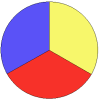
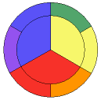
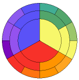
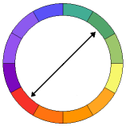
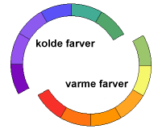
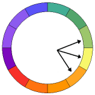
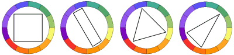
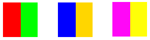

Farvecirklen
af Andreas Astrup, HTML.dk
Sidst opdateret 23. februar 2001
Synes du også, at det er svært at få farverne på dit websted til at spille? I denne artikel kan du læse om, hvilke farver der harmonerer og hvilke der ikke gør.
Farveteori er en egentlig videnskab med prominente navne som Goethe (ham med Faust) og Newton (ham med æblet) involveret. I denne artikel vil vi dog nøjes med at give en kort introduktion til farvecirklen.
Hvad er farvecirklen?
Farvecirklen er en grafisk fremstilling af forholdet mellem forskellige farver. Cirklen bygger på de tre primærfarver, der ikke kan skabes ved at blande andre farver: Rød, gul og blå:
Sekundærfarverne er de farver, der fremkommer ved at blande primærfarverne: rød+gul=orange, rød+blå=violet, gul+blå=grøn:
Og endelig er der tertiærfarverne, der fremkommer ved igen at blande sekundærfarverne med en primærfarve:
Desuden er der de såkaldte neutrale farver: sort, hvid og grå, som ikke er en del af farvecirklen, men bestemt er vigtige alligevel.
Hvad er forholdet mellem farverne så?
Kontraster
At farver kontraster vil sige, at de fremhæver hinanden.
Et vigtig begreb i forhold til farvecirklen er komplementærfarver. Komplementærfarver er farver, der ligger modsat hinanden i farvecirklen. F.eks. er rød og grøn komplementærfarver ligesom blå og orange er det.
Komplementærfarver står i kontrast til hinanden, men der findes også andre kontraster. F.eks. er primærfarverne (rød, gul og blå) kontraster, ligesom der opstår en kontrast ved at sammensætte en lys farve (dvs. tilsat meget hvid) med en mørk farve (tilsat meget sort). Desuden kan farvecirklen deles op i varme og kolde farver, der ligeledes danner kontraster, når de sættes sammen.
Harmoni
At farver harmonerer vil sige, at de er i balance med hinanden. Ligesom der findes forskellige typer kontraster, findes der også forskellige typer harmoni.
En type harmoni forekommer ved at sammensætte en farve med den samme farve tilsat hvid eller sort (kaldet monokromatisk harmoni):

Analog harmoni fremkommer ved at vælge en hvilken som helst farve på farvecirklen og den farve der ligger enten til højre eller til venstre for denne. Disse farver minder om hinanden uden at være ens på samme måde som græsset på en græsplæne eller pelsen på en kat.
Udover at kunne skabe kontrast kan komplementærfarver også skabe harmoni (komplementær harmoni), og andre harmonier kan findes ved at lægge forskellige geometriske figurer ind i farvecirklen. Uanset hvordan nedenstående figurer drejes, vil de farver, spidserne peger på, tilsammen skabe harmoni.
Brugen af farvecirklen
Her er en række gode råd i forbindelse med brugen farvecirklen:
Brug komplementærfarverne - med omtanke
Komplementærfarver er hinandens modsætninger, og en sammensætning af sådan to farver er med til at skabe dynamik, men pas på - det er stærke sager. En smule komplementærfarver skaber liv, men over et stort areal vil det virke forstyrrende. Kontrasten mellem komlementærfarver bliver stærkest, hvis der bruges meget af den ene og kun lidt af den anden.
Hvis en farve er blevet for dominerende, kan man neutralisere dens dominans ved at tilsætte dens komplementærfarve. Har man f.eks. en meget blå side vil det hjælpe at tilsætte orange på siden. Mange professionelle designere bruger split-komplementærfarver, dvs. at de istedet for at vælge den egentlige komplementærfarve vælger den farve der ligger lige til højre eller venstre for den i farvecirklen.
Overvej hvad din side skal signalere
Farvesammensætningen har stor betydning for, hvordan din side vil virke på de besøgende. Overvej, hvordan du gerne vil have dem til at opleve siden.
Bruger du monokromatisk harmoni (den samme farve i forskellige nuancer), får siden et ensartet udseende:
Ved analog harmoni (farver der ligger lige op af hinanden på farvecirklen) skabes rolighed og siden kommer til at virke afslappende.
Bruges komplementærfarver skabes blikfang, men siden kan let komme til at virke forstyrrende.
Ton dine farver
Sammensætning af rene klare farver kan virke meget skarp. Nedenfor er vist fire komplementærharmonier. I den første række er farverne rene klare farver, mens de er tonet (tilsat sort/hvid) i den anden række.
Rene klare farver:
Tonede farver:
Undgå at bruge mange farver
Mange farver skaber kaos for øjet, der ikke ved hvor det skal fokusere. Prøv at nøjes med 1-4 forskellige farver - disse farver kan tones (tilsættes sort/hvid), og du vil stadig have rigeligt med muligheder.
Farver er det stærkeste grafiske virkemiddel og bør bruges som et krydderi - lidt er lækkert, men det bliver hurtigt for meget.
- Relateret materiale på HTML.dk
- Relaterede nyhedsgrupper på Usenet